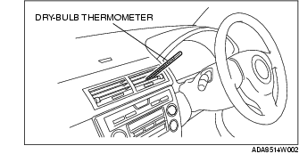

Refrigerant system performance test
1. Perform refrigerant pressure check. (See REFRIGERANT PRESSURE CHECK.)
- • If they are correct, go to next step.
- • If there is any malfunction, troubleshoot the refrigerant system. (See TROUBLESHOOTING INDEX.)
2. Place a dry-bulb thermometer in the driver-side center ventilator outlet.

3. Warm up the engine and run it at a constant 1,500 rpm.
4. Set the fan speed to MAX HI.
5. Turn the A/C switch on.
6. Set the RECIRCULATE mode.
7. Set the temperature control to MAX COLD.
8. Set the VENT mode.
9. Close all the doors and all the windows.
10. Wait until the air conditioner output temperature stabilizes.
Stabilized condition11. Record driver-side center ventilator outlet temperature.
12. Determine and record ambient temperature.
13. Verify that the temperature reading is in the shaded zone.

- • If the performance is not within the shaded zone, troubleshoot the refrigerant system. (See TROUBLESHOOTING INDEX.)